knitr::opts_chunk$set(echo = TRUE)Week-7: Code-along
II. Code to edit and execute using the Code-along.Rmd file
ggplot(data = [dataset],
mapping = aes(x = [x-variable], y = [y-variable])) + geom_xxx() + other options
1. Load library and dataset.
# Enter code here
library(tidyverse)── Attaching core tidyverse packages ──────────────────────── tidyverse 2.0.0 ──
✔ dplyr 1.1.2 ✔ readr 2.1.4
✔ forcats 1.0.0 ✔ stringr 1.5.0
✔ ggplot2 3.4.3 ✔ tibble 3.2.1
✔ lubridate 1.9.2 ✔ tidyr 1.3.0
✔ purrr 1.0.2
── Conflicts ────────────────────────────────────────── tidyverse_conflicts() ──
✖ dplyr::filter() masks stats::filter()
✖ dplyr::lag() masks stats::lag()
ℹ Use the conflicted package (<http://conflicted.r-lib.org/>) to force all conflicts to become errorslibrary(palmerpenguins)2. Efficiently use GGPLOT
ggplot(penguins, #Start with the penguins data fram
aes(x = bill_depth_mm, # Map bill depth to the x-axi
y = bill_length_mm, # Map bill length to the y-axi
colour = species, #Map species to the colour of each point
shape = species, #map islands to diff shapes
size = body_mass_g, #map body mass to diff sizes
alpha = flipper_length_mm)) + #map flipper length to diff transparency
geom_point() #Represent each observation with a plotWarning: Removed 2 rows containing missing values (`geom_point()`).
scale_colour_viridis_d()<ggproto object: Class ScaleDiscrete, Scale, gg>
aesthetics: colour
axis_order: function
break_info: function
break_positions: function
breaks: waiver
call: call
clone: function
dimension: function
drop: TRUE
expand: waiver
get_breaks: function
get_breaks_minor: function
get_labels: function
get_limits: function
guide: legend
is_discrete: function
is_empty: function
labels: waiver
limits: NULL
make_sec_title: function
make_title: function
map: function
map_df: function
n.breaks.cache: NULL
na.translate: TRUE
na.value: NA
name: waiver
palette: function
palette.cache: NULL
position: left
range: environment
rescale: function
reset: function
scale_name: viridis_d
train: function
train_df: function
transform: function
transform_df: function
super: <ggproto object: Class ScaleDiscrete, Scale, gg>3. Mapping
ggplot(penguins) +
aes(x = bill_depth_mm,
y = bill_length_mm,
size = body_mass_g,
alpha = flipper_length_mm) +
geom_point()Warning: Removed 2 rows containing missing values (`geom_point()`).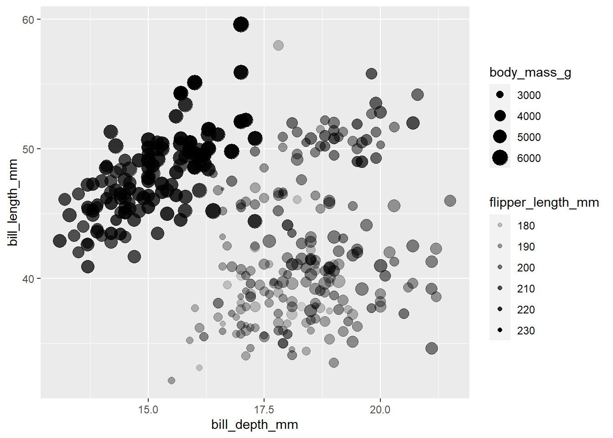
4. Setting
ggplot(penguins) +
aes(x = bill_depth_mm,
y = bill_length_mm) +
geom_point(size = 2, alpha = 0.5)Warning: Removed 2 rows containing missing values (`geom_point()`).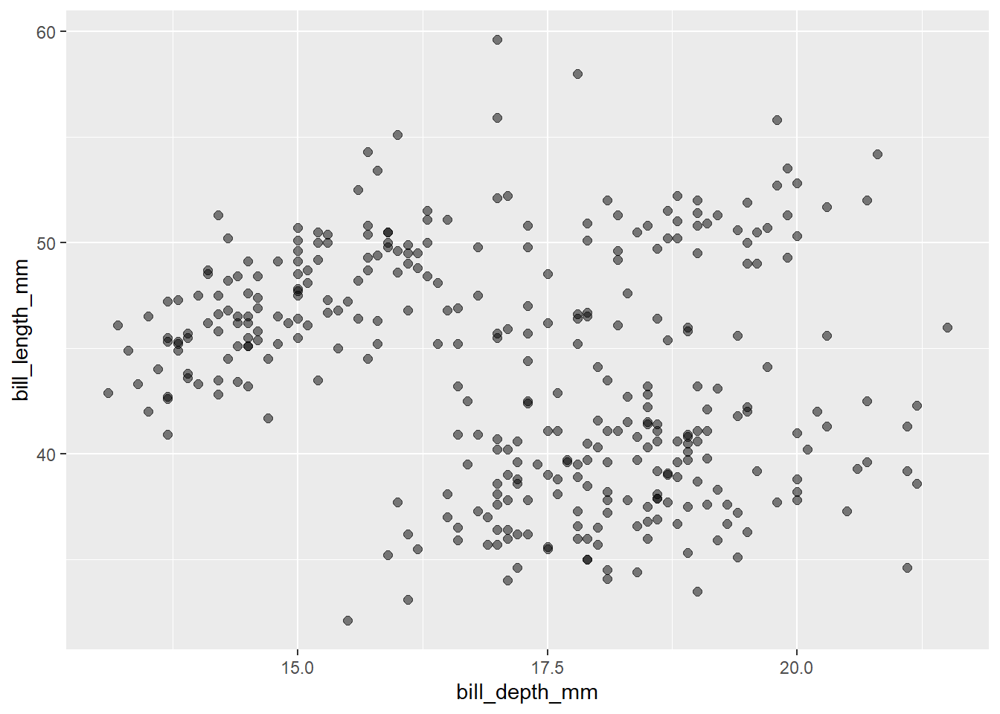
5.Facte
ggplot(penguins) +
aes(x = bill_depth_mm,
y = bill_length_mm,
color = species) +
geom_point() +
#1 facet_grid(species ~ island)
#2 facet_grid(species ~ sex) [USING THIS AS EXAMPLE BELOW]
#3 facet_grid(sex ~ specie)
#4 facet_wrap(~ species)
#5 facet_wrap(~ species, ncol = 2)
#6 facet_grid(. ~ species)
facet_grid(species ~ sex) + scale_color_viridis_d() +
guides(color = "none")Warning: Removed 2 rows containing missing values (`geom_point()`).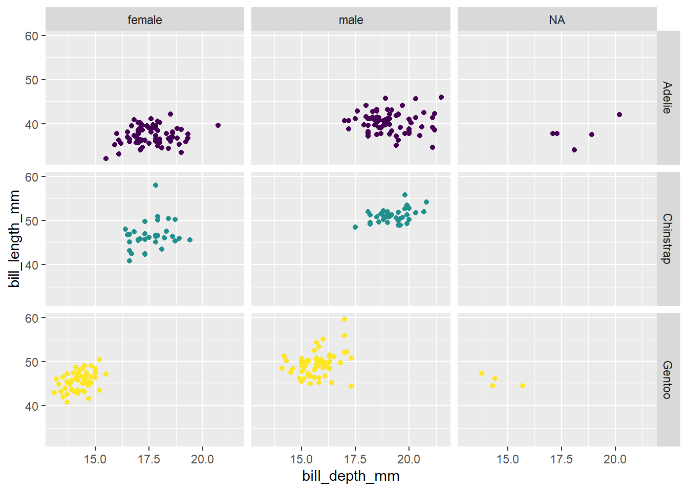
6. Numerical Varibles Graphs
library(openintro)Loading required package: airportsLoading required package: cherryblossomLoading required package: usdataloans <- loans_full_schema %>%
select(loan_amount, interest_rate, term, grade,
state, annual_income, homeownership, debt_to_income)
glimpse(loans)Rows: 10,000
Columns: 8
$ loan_amount <int> 28000, 5000, 2000, 21600, 23000, 5000, 24000, 20000, 20…
$ interest_rate <dbl> 14.07, 12.61, 17.09, 6.72, 14.07, 6.72, 13.59, 11.99, 1…
$ term <dbl> 60, 36, 36, 36, 36, 36, 60, 60, 36, 36, 60, 60, 36, 60,…
$ grade <fct> C, C, D, A, C, A, C, B, C, A, C, B, C, B, D, D, D, F, E…
$ state <fct> NJ, HI, WI, PA, CA, KY, MI, AZ, NV, IL, IL, FL, SC, CO,…
$ annual_income <dbl> 90000, 40000, 40000, 30000, 35000, 34000, 35000, 110000…
$ homeownership <fct> MORTGAGE, RENT, RENT, RENT, RENT, OWN, MORTGAGE, MORTGA…
$ debt_to_income <dbl> 18.01, 5.04, 21.15, 10.16, 57.96, 6.46, 23.66, 16.19, 3…#Historgram:
ggplot(loans, aes(x = loan_amount, fill = homeownership)) +
geom_histogram(binwidth = 5000, alpha = 0.5) +
labs(x = "Loan amount ($)",y = "Frequency",title = "Amounts of Lending Club loans")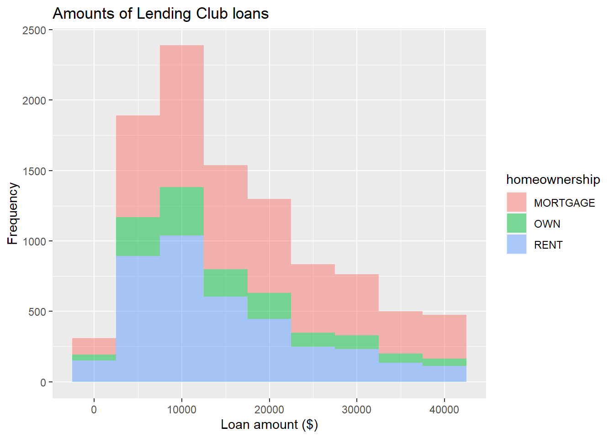
#{When fill w a categorical varible: facet_wrap(~ homeownership, nrow = 3)}
#Density plot
ggplot(loans, aes(x = loan_amount, fill = homeownership)) +
geom_density(adjust = 2, alpha = 0.5) +
labs(x = "Loan amount ($)",y = "Density",title = "Amounts of Lending Club loans")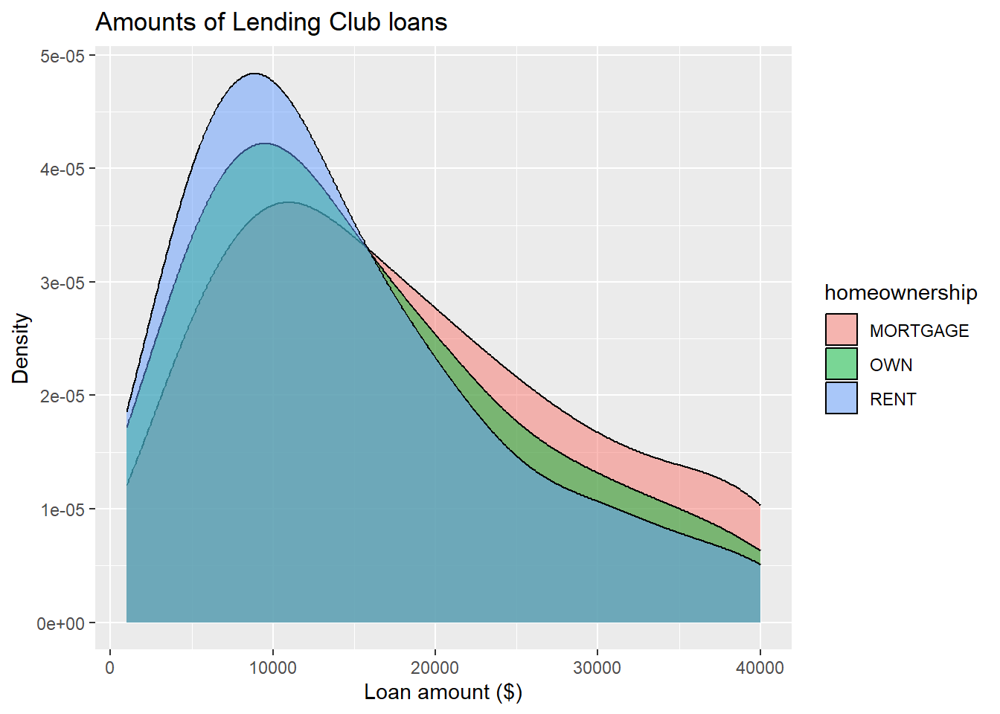
#Box plot
ggplot(loans, aes(x = interest_rate)) +geom_boxplot() +labs(x = "Interest rate (%)",y = NULL,
title = "Interest rates of Lending Club loans") +
theme( axis.ticks.y = element_blank(), axis.text.y = element_blank() )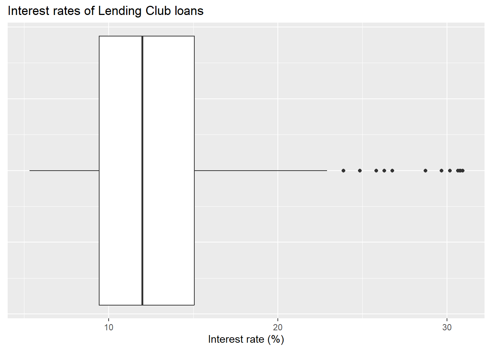
#Scatterplot
ggplot(loans, aes(x = debt_to_income, y = interest_rate)) +
geom_point()Warning: Removed 24 rows containing missing values (`geom_point()`).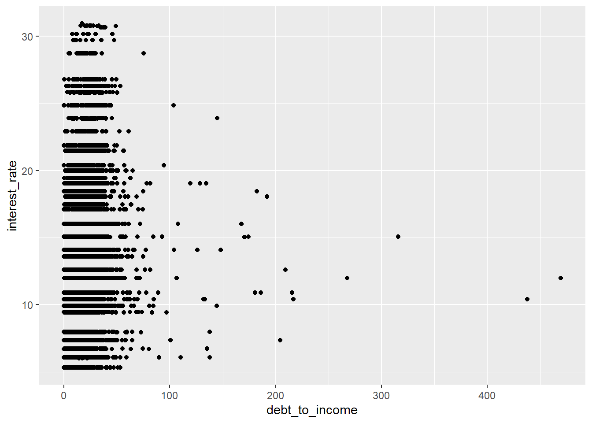
#Hex plot
ggplot(loans %>% filter(debt_to_income < 100),
aes(x = debt_to_income, y = interest_rate)) +
geom_hex()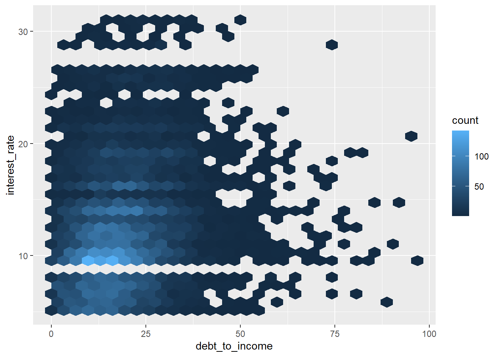
7. Categoric varibles graph
# Segmented bar plot
ggplot(loans, aes(x = homeownership,
fill = grade)) +
geom_bar()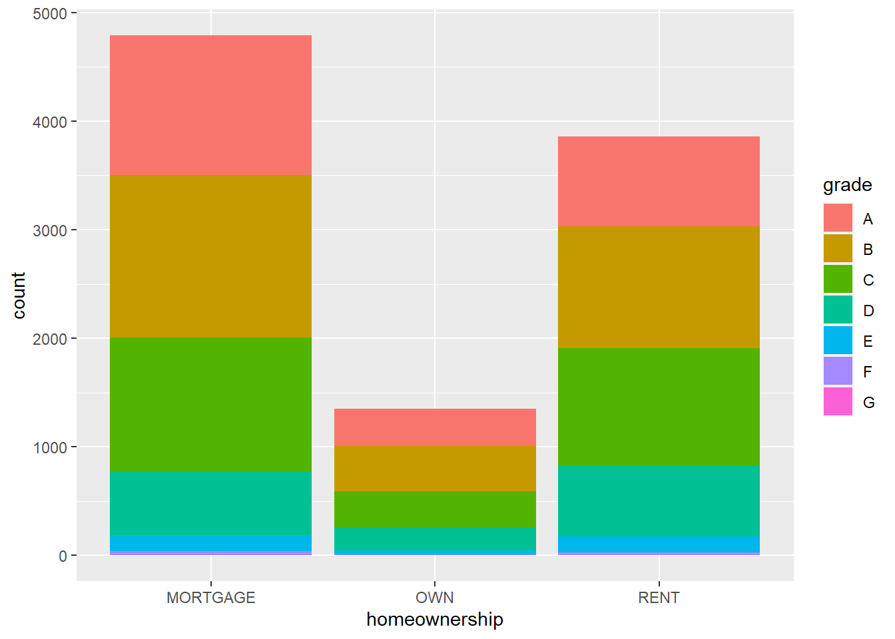
# {or: geom_bar(position = "fill")}
ggplot(loans, aes(y = homeownership, fill = grade)) + geom_bar(position = "fill") +
labs( x = "Proportion", y = "Homeownership", fill = "Grade", title = "Grades of Lending Club loan")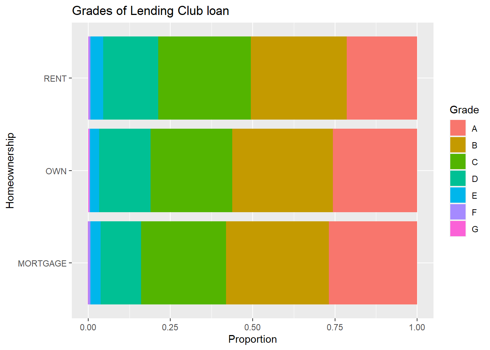
8. Setting defaults (Slide #25)
# First define the function
calc_sample_mean <- function(sample_size,
our_mean=0,
our_sd=1) {
sample <- rnorm(sample_size,
mean = our_mean,
sd = our_sd)
mean(sample)
}
# Call the function
calc_sample_mean(sample_size = 10)[1] 0.275089. Varied varibles graph
#Violin plots
ggplot(loans, aes(x = homeownership, y = loan_amount)) +
geom_violin()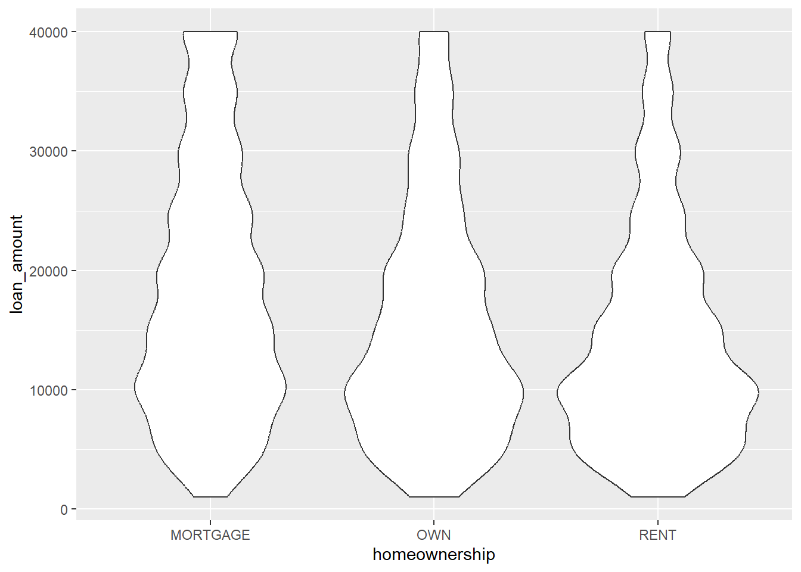
#Ridge plots
library(ggridges)
ggplot(loans, aes(x = loan_amount, y = grade, fill = grade, color = grade)) +
geom_density_ridges(alpha = 0.5)Picking joint bandwidth of 2360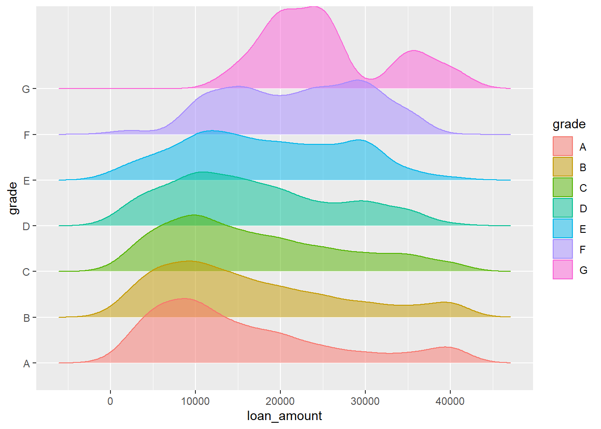